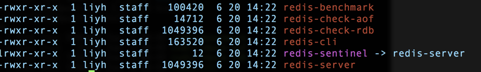
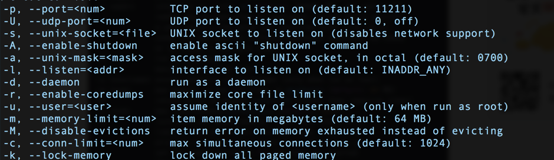
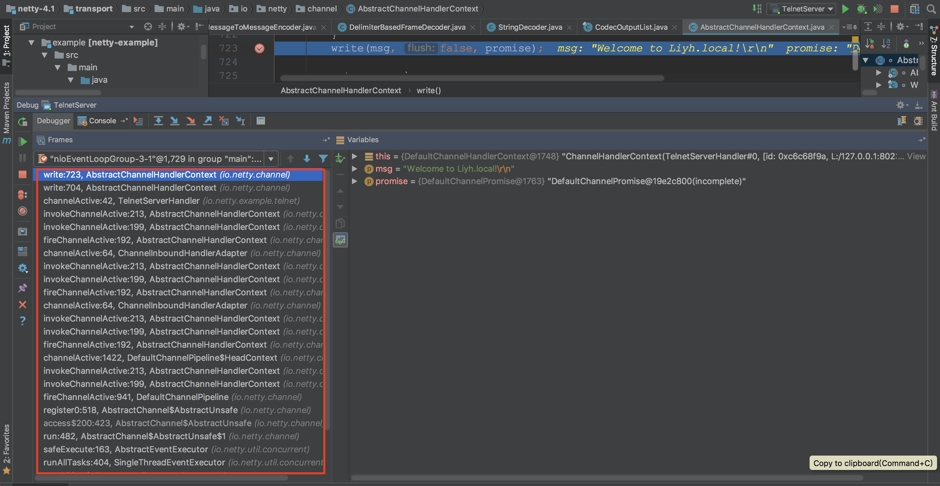

如何高效地学习开源项目 | “华仔，放学别走！” 第3期
你好，我是华仔。今天这期“特别放送”，我想和你聊聊如何高效地学习开源项目，一方面澄清开源项目学习过程中的几个误区，另一方面谈谈我自己具体实践时的一套方法论。
得益于开源运动的蓬勃发展，众多技术顶尖的公司、团队或者个人通过开源的方式向技术社区贡献了许多优秀的开源项目，一方面大大促进了整体技术的发展，另一方面大大减轻了中小公司和团队在技术方面的投入压力，让团队能够更加聚焦于业务。
开源项目对团队和业务有很大好处，但对于技术人员来说，如果只是简单的采取“拿来主义”，那就变成一个陷阱：看似很快的用开源项目实现了需求，但自己的技术水平并没有什么提升；甚至可能出现看起来用了很多开源项目，知道很多项目名称，但技术水平止步不前的窘境。
因此，对于开源项目，不能简单的采取“拿来主义”，而要比较深入的去学习开源项目，做到“知其然，知其所以然”，一方面是为了更好地应用这些开源项目，另一方面也是为了通过学习优秀的开源项目来提升自己的能力。
很多技术同学确实也想深入学习一些业界成熟和优秀的开源项目，例如 Nginx、Redis、Netty 等，但是在具体实践的时候，常常因为一些不正确的观点而误入歧途，例如：
- 只有开发这些开源项目的人才能真正理解，我没法参与这个项目开发，因此我很难深入理解。
- 我的项目没有用 Redis，不用的话很难深入理解。
- 数据结构和算法很重要，所以我只要研究其数据结构和算法就够了，例如 Nginx 用的红黑树。
- “Talk is cheap, show me the code”，一头扎进源码逐行阅读。
这些观点要么让自己望而生畏从而轻易放弃，要么让自己浪费大量时间而没有多大收获。那究竟要怎样做才是正确的呢？下面我结合自己的经验谈谈我对如何学习开源项目的看法。
- 首先，需要树立正确的观念：不管你是什么身份，都可以从开源项目中学到很多东西。
例如，要理解 Redis 的网络模型，我们不需要成为 Redis 的开发者，也不需要一定要用到 Redis，只要具备一定的网络编程基础，再通过阅读 Redis 的源码，都可以学习 Redis 这种单进程的 Reactor 模型。
- 其次，不要只盯着数据结构和算法，事实上这两点在学习开源项目的时候并没有那么重要。
例如，Nginx 使用红黑树来管理定时器，对于绝大部分人来说，只要知道这点就够了，并不需要去研究 Nginx 实现红黑树的源码是如何写的，除非你需要修改这部分，但我认为极少人会有这个需求。
- 第三，采取“自顶向下”的学习方法，源码不是第一步，而是最后一步。
不要一上来就去看源码，而是要基本掌握了功能、原理、关键设计之后再去看源码，看源码的主要目的是为了学习其代码的写作方式，以及关键技术的实现。
例如，Redis 的 RDB 持久化模式“会将当前内存中的数据库快照保存到磁盘文件中”，那这里所谓的“数据库快照”到底是怎么做的呢？在 Linux 平台上其实就是 fork 一个子进程来保存就可以了；那为何 fork 子进程就生成了数据库快照了呢？这又和 Linux 的父子进程机制以及 copy-on-write 技术相关了。
通过这种方式，既能够快速掌握系统设计的关键点（Redis 的 RDB 模式），又能够掌握具体的编程技巧（内存快照）。
接下来我详细谈谈“自顶向下”的学习方法和步骤。
第一步：安装
很多人看到“安装”这个步骤都可能会觉得有点不以为然：“不就是对照手册执行一下命令么，没什么技术含量，用的时候装一下就可以了”。事实上，安装步骤远远不止这么简单，通过具体的安装过程，你可以获取到如下一些关键信息：
- 这个系统的依赖组件，而依赖的组件是系统设计和实现的基础
以 Nginx 为例，源码安装 Nginx 依赖的库有 pcre、pcre-devel、openssl、openssl-devel、zlib，光从名字上看都能够了解一些信息，例如 openssl 可能和 https 有关，zlib 可能和压缩有关。
再以 Memcache 为例，最大的依赖就是 libevent，而根据 libevent 是一个高性能的网络库，我们就能大概推测 Memcache 的网络实现应该是 Reactor 模型的。
- 安装目录也能够提供一些使用和运行的基本信息
例如，Nginx 安装完成后，目录如下：
这个目录提供的信息有：conf 是存放配置文件的，logs 是存放日志的，sbin 是运行程序，但是 html 是什么呢？这个疑问会促使你继续去研究和学习。
再来看看 Redis，安装完成后，目录下只有一个 bin 目录，具体如下：

我相信大部分人看到这目录都会感到有点惊讶：这也太简单了吧，尤其是与 Nginx 相比！因此也会自然而然的有一些疑问，例如 Redis 如何配置？Redis 日志保存在哪里？这些疑问同样会促使你继续去研究和学习，带着问题去学习效率是最高的。
- 系统提供了哪些工具方便我们使用
同样以 Redis 为例，你可以看到 redis-benchmark、redis-check-aof 等程序，从名字能够大概猜出这些工具的基本使用场景，而这些工具在后面故障定位和处理、性能测试等场景可能非常方便。
第二步：运行
安装完成后，我们需要真正将系统运行起来，运行系统的时候有两个地方要特别关注：命令行和配置文件，它们主要提供了两个非常关键的信息：系统具备哪些能力和系统将会如何运行。这些信息是我们窥视系统内部运行机制和原理的一扇窗口。
例如，下面是 Memcache 的启动参数一部分：
通过这几个启动参数，你可以获取如下一些信息：
- Memcache 支持 UNIX socket 通信和 TCP 通信。
- Memcache 可以指定内存大小。
- lock memory 看起来和内存有关，但具体是什么意思？配置和不配置有什么区别么？
通常情况下，如果我们将每个命令行参数和配置项的作用和原理都全部掌握清楚了的话，基本上对系统已经很熟悉了。我的一个习惯是不管三七二十一，先把所有的配置项全部研究一遍，包括配置项的原理、作用、影响，并且尝试去修改配置项然后看看系统会有什么变化。例如，将 Memcache 的“--conn-limit”改为 1 后，查看多个连接请求时 Memecache 会返回什么错误、记录什么日志等。
第三步：原理研究
完成前两个步骤后，我们对系统已经有了初步的感觉和理解，此时可以更进一步去研究其原理。其实在研究命令行和配置项的时候已经涉及一部分原理了，但是还不系统，因此我们要专门针对原理进行系统性的研究。这里的关键就是“系统性”三个字，怎么才算系统性呢？主要体现在如下几个方面：
- 关键特性的基本实现原理
每个流行的开源项目之所以能够受到大众的欢迎，肯定是有一些卖点的，常见的有高性能、高可用、可扩展等特性，那到底这些项目是如何做到其所宣称的那么牛的呢？这些牛 X 的技术实现就是我们要学习的地方。
例如，Memcache 的高性能具体是怎么做到的呢？首先是基于 libevent 实现了高性能的网络模型，其次是内存管理 Slab Allocator 机制。为了彻底理解 Memcache 的高性能网络模型，我们需要掌握很多知识：多路复用、Linux epoll、Reactor 模型、多线程等，通过研究 Memcache 的高性能网络模型，我们能够学习一个具体的项目中如何将这些东西全部串起来实现了高性能。
再以 React 为例，Virtual DOM 的实现原理是什么、为何要实现 Virtual DOM、React 是如何构建 Virtual DOM 树、Virtual DOM 与 DOM 什么关系等，通过研究学习 Virtual DOM，即使不使用 React，我们也能够学习如何写出高性能的前端的代码。
- 优缺点对比分析
这是我想特别强调的一点，只有清楚掌握技术方案的优缺点后才算真正的掌握这门技术，也只有掌握了技术方案的优缺点后才能在架构设计的时候做出合理的选择。
优缺点主要通过对比来分析，即：我们将两个类似的系统进行对比，看看它们的实现差异，以及不同的实现优缺点都是什么。
典型的对比有 Memcache 和 Redis，例如（仅举例说明，实际上对比的点很多），Memcache 用多线程，Redis 用单进程，各有什么优缺点？Memcache 和 Redis 的集群方式，各有什么优缺点？
即使是 Redis 自身，我们也可以对比 RDB 和 AOF 两种模式的优缺点。
在你了解了什么是“系统性”后，我来介绍一下原理研究的手段，主要有三种：
- 通读项目的设计文档：例如 Kafka 的设计文档，基本涵盖了消息队列设计的关键决策部分；Disruptor 的设计白皮书，详细的阐述了 Java 单机高性能的设计技巧。
- 阅读网上已有的分析文档：通常情况下比较热门的开源项目，都已经有非常多的分析文档了，我们可以站在前人的基础上，避免大量的重复投入。但需要注意的是，由于经验、水平、关注点等差异，不同的人分析的结论可能有差异，甚至有的是错误的，因此不能完全参照。一个比较好的方式就是多方对照，也就是说看很多篇分析文档，比较它们的内容共同点和差异点。
- Demo 验证：如果有些技术点难以查到资料，自己又不确定，则可以真正去写 Demo 进行验证，通过打印一些日志或者调试，能清晰的理解具体的细节。例如，写一个简单的分配内存程序，然后通过日志和命令行（jmap、jstat、jstack 等）来查看 Java 虚拟机垃圾回收时的具体表现。
第四步：测试
通常情况下，如果你真的准备在实际项目中使用某个开源项目的话，必须进行测试。有的同学可能会说，网上的分析和测试文档很多，直接找一篇看就可以了？如果只是自己学习和研究，这样做是可以的，因为构建完整的测试用例既需要耗费较多时间，又需要较多机器资源，如果每个项目都这么做的话，投入成本有点大；但如果是要在实践项目中使用，必须自己进行测试，因为网上搜的测试结果，不一定与自己的业务场景很契合，如果简单参考别人的测试结果，很可能会得出错误的结论。例如，开源系统的版本不同，测试结果可能差异较大。同样是 K-V 存储，别人测试的 value 是 128 字节，而你的场景 value 都达到了 128k 字节，两者的测试结果也差异很大，不能简单照搬。
测试阶段需要特别强调的一点就是：测试一定要在原理研究之后做，不能安装完成立马就测试！原因在于如果对系统不熟悉，很可能出现命令行、配置参数没用对，或者运行模式选择不对，导致没有根据业务的特点搭建正确的环境、没有设计合理的测试用例，从而使得最终的测试结果得出了错误结论，误导了设计决策。曾经有团队安装完成 MySQL 5.1 后就进行性能测试，测试结果出来让人大跌眼镜，经过定位才发现 innodb_buffer_pool_size 使用的是默认值 8M。
第五步：源码研究
源码研究的主要目的是学习原理背后的具体编码如何实现，通过学习这些技巧来提升我们自己的技术能力。例如 Redis 的 RDB 快照、Nginx 的多 Reactor 模型、Disruptor 如何使用 volatile 以及 CAS 来做无锁设计、Netty 的 Zero-Copy 等，这些技巧都很精巧，掌握后能够大大提升自己的编码能力。
通常情况下，不建议通读所有源码，因为想掌握每行代码的含义和作用还是非常耗费时间的，尤其是 MySQL、Nginx 这种规模的项目，即使是他们的开发人员，都不一定每个人都掌握了所有代码。带着明确目的去研究源码，做到有的放矢，才能事半功倍，这也是源码研究要放在最后的原因。
对于一些基础库，除了阅读源码外，还可以自己写个 Demo 调用基础库完成一些简单的功能，然后通过调试来看具体的调用栈，通过调用栈来理解基础库的处理逻辑和过程，这比单纯看代码去理解逻辑要高效一些。例如，下面是 Netty 4.1 版本的 telnet 服务器样例调试的堆栈，通过堆栈我们可以看到完整的调用栈：
时间分配
前面介绍的“自顶向下”5 个步骤，完整执行下来需要花费较长时间，而时间又是大部分技术人员比较稀缺的资源。很多人在学习技术的时候都会反馈说时间不够，版本进度很紧，很难有大量的时间进行学习，但如果不学习感觉自己又很难提升？面对这种两难问题，具体该如何做呢？
通常情况下，以上 5 个步骤的前 3 个步骤，不管是已经成为架构师的技术人员，还是立志成为架构师的技术人员，在研究开源项目的时候都必不可少；第四步可以在准备采用开源项目的时候才实施，第五步可以根据你的时间来进行灵活安排。这里的“灵活安排”不是说省略不去做，而是在自己有一定时间和精力的时候做，因为只有这样才能真正理解和学到具体的技术。
如果感觉自己时间和精力不够，与其蜻蜓点水每个开源项目都去简单了解一下，还不如集中精力将一个开源项目研究通透，就算是每个季度只学习一个开源项目，积累几年后这个数量也是很客观的；而且一旦你将一个项目研究透以后，再去研究其他类似项目，你会发现自己学习的非常快，因为共性的部分你已经都掌握了，只需要掌握新项目差异的部分即可。
今天，我给你分享了我对于学习开源项目的看法和步骤，希望对你有所帮助。如果你在工作、学习中遇到什么问题，不论是技术、管理或者其他方面，欢迎在“特别放送”里给我留言，可能你的问题就是“华仔，放学别走！第 4 期”的主题。